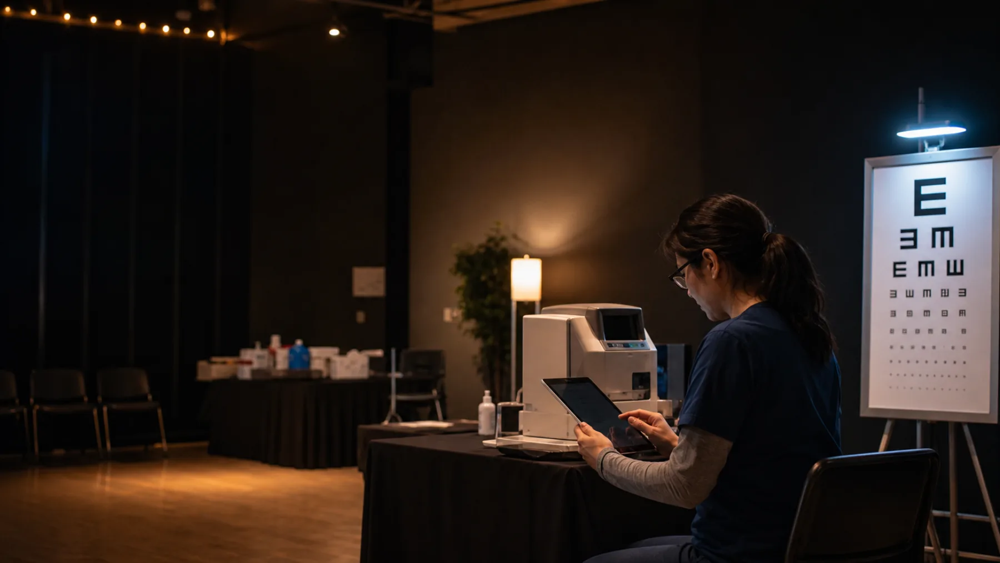
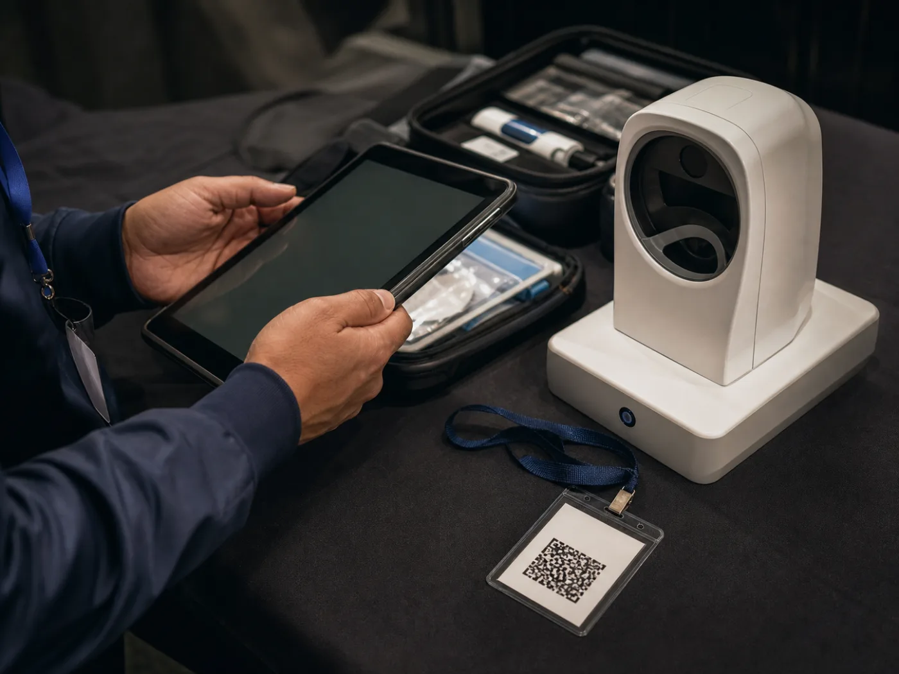

Vision screening operations
Every event. One place.
Plan events, guide field teams, review flags, and protect every record when the connection drops.
Explore VSMS
Everything the team needs. Nothing the event does not.
Set venues, operating windows, stations, and capacity before the doors open.
Find returning participants, record consent, and issue a secure event pass.
See who is waiting, where they are going, and which exception needs attention.

Keep outcomes connected across stations with clear reviewer handoffs.
Trace actions, review event performance, and export dependable records.
Offline is a working state.
Saved safely on this device. Records will synchronise when the connection returns.
- Saved offline
- Pending sync
- Syncing
- Synced
- Sync failed
- Conflict review